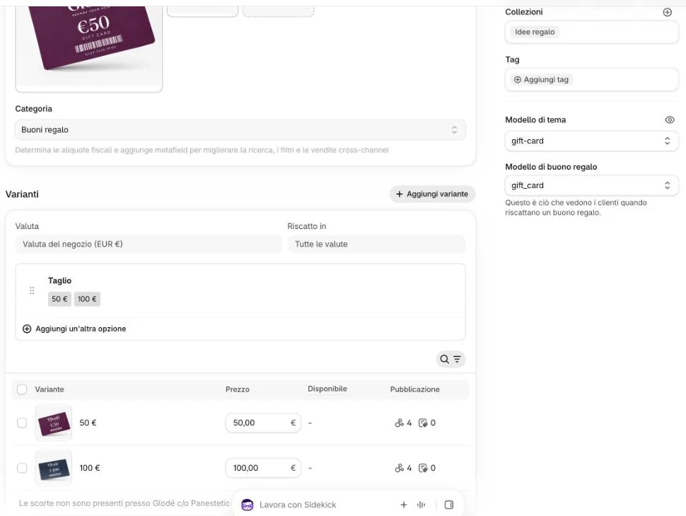
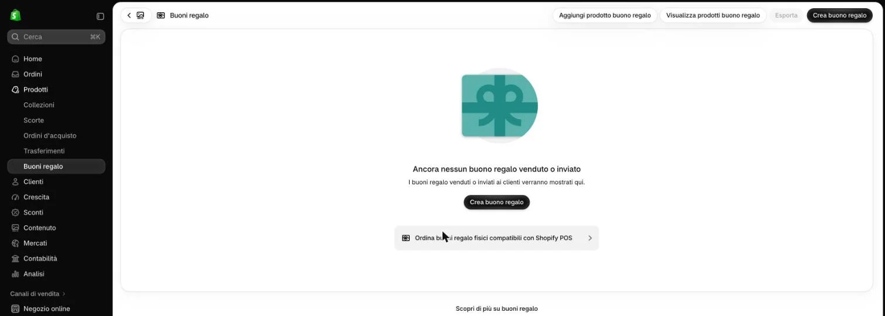

La gift card è un prodotto, «Gift card Glodé», con due tagli: 50 € e 100 €. Un buono si può anche regalare a mano, senza che nessuno lo compri.
Cliccate «Prodotti» e aprite «Gift card Glodé».
Per cambiare il prezzo di un taglio, scrivetelo nella tabella delle varianti e cliccate «Salva».

Non qui2Quanto deve costare?
Quanto il taglio: la gift card da 50 € costa 50 €.
Le caselle con il riquadro rosso?
«Modello di tema» e «Modello di buono regalo» decidono come si vedono la scheda della gift card e il buono ricevuto: non cambiateli.
Per un taglio nuovo, aggiungete un valore all’opzione «Taglio», scrivete il prezzo e cliccate «Salva».
3Come si aggiunge un valore?
Come la Mini in un prodotto: Aggiungere la Mini 15 ml, passo 2. Scrivete il taglio come gli altri, con lo spazio prima di €.
Non usate «Aggiungi un’altra opzione»: aggiungerebbe una seconda scelta oltre al taglio.
Per regalare un buono a mano, cliccate «Prodotti» → «Buoni regalo», poi «Crea buono regalo».

Non qui4E dopo?
La pagina del buono non l’abbiamo aperta insieme: il buono vale come denaro, quindi la prima volta fatelo con noi.
«Aggiungi prodotto buono regalo»?
Non serve: il prodotto «Gift card Glodé» c’è già. Crearne un altro metterebbe una seconda gift card sul sito.
Sul sito
La scheda della gift card (glode-lab.it/products/gift-card-glode) mostra i tagli e il modulo «a chi la regali». Sotto, «I più regalati della linea» sono i prodotti della collezione «Idee regalo», che si cambia come I più amati.